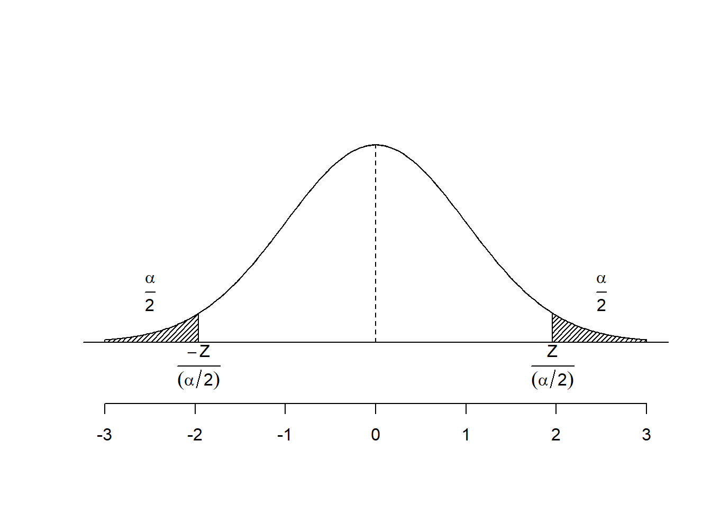

Chapter 10 Polinômios Ortogonais
- A variável analisada na análise de variância nos delineamentos discutidos anteriormente pode ser qualitativa ou quantitativa.
- Uma variável quantitativa é aquela cujos níveis podem ser associados com pontos em uma escala numérica, tal como temperatura, pressão ou tempo.
- Variáveis qualitativas, por outro lado, apresentam valores que não podem ser colocados em ordem de magnitude.
10.1 Teste F
- Se o efeito de tratamentos for significativo e, os níveis forem quantitativos, deve-se decompor os graus de liberdade dos tratamentos em regressão linear, quadrática e cúbica.
- Em situações em que os níveis da variável possuem o mesmo espaçamento, esta decomposição pode ser feita de modo simples pelo método dos polinômios ortogonais, com o auxílio de coeficientes dados em tabelas.
10.2 Quadro da Análise de variância
| CV | G.L. | S.Q. | Q.M. | Fcalc | Ftab |
|---|---|---|---|---|---|
| Trat | \(a-1\) | \(SQ_{trat}\) | \(\frac{SQ_{trat}}{a-1}\) | \(\frac{QM_{trat}}{QM_{Res}}\) | \(F(\alpha;GL_{Trat};GL_{Res})\) |
| Linear | 1 | \(SQ_{\hat{y}L}\) | \(QM_{\hat{y}L}\) | \(\frac{QM_{\hat{y}L}}{QM_{res}}\) | |
| Quadrático | 1 | \(SQ_{\hat{y}Q}\) | \(QM_{\hat{y}Q}\) | \(\frac{QM_{\hat{y}Q}}{QM_{res}}\) | |
| Cúbico | 1 | \(SQ_{\hat{y}C}\) | \(QM_{\hat{y}C}\) | \(\frac{QM_{\hat{y}C}}{QM_{res}}\) | |
| resíduo | \(a(b-1)\) | \(SQ_{res}\) | \(\frac{SQ_{res}}{a(b-1)}\) | ||
| Total | \(ab-1\) | \(SQ_{Total}\) |
10.3 Exemplo 1
Avaliação e Caracterização de Silagem de Triticale (X Triticosecale Wittimack)
No Brasil, quando se fala em produção de volumoso conservado, logo se imagina silagem de milho ou sorgo. No entanto, em clima subtropical e temperado, silagens de cereais de inverno tornam-se uma alternativa interessante para produção dos mesmos, principalmente em situações onde culturas de verão não são possíveis de serem cultivadas.
Assim, um trabalho foi desenvolvido com o objetivo de avaliar a silagem de triticale em substituição à silagem de sorgo na alimentação de bovinos corte. O ensaio foi realizado no Laboratório de análises de Alimentos e Nutrição Animal (LANA) do Departamento de Zootecnia da Universidade Estadual de Londrina.
Foi estudado a silagem de triticale em substituição a silagem de sorgo com os teores de 0, 25, 50, 75 e 100% de substituição à de sorgo, a fim de melhor avaliar o valor nutritivo deste volumoso. Foi realizada a determinação da matéria seca (MS). O delineamento experimental utilizado foi o inteiramente casualizado com 4 repetições.
Fonte: http://www.uel.br/pessoal/silvano/Experimental/R/Polinomios/Sorgo_Sandra.R
10.3.1 Conjunto de dados
MS=c(93.517, 93.246, 93.216, 93.224,
93.168, 93.645, 93.640, 93.357,
92.985, 92.644, 92.506, 92.293,
93.124, 93.375, 93.138, 92.678,
92.529, 92.150, 92.603, 92.415)
AMOSTRA=c(0,0,0,0,
25,25,25,25,
50,50,50,50,
75,75,75,75,
100,100,100,100)
dados=data.frame(Amostra=factor(AMOSTRA),MS)
attach(dados)10.4 Análise de Variância
\[\begin{eqnarray*} \left\{ \begin{array}{ll} H_0: & \mu_1 = \mu_2 = \mu_3 = \cdots = \mu_{5} \\[.2cm] H_1: & \mu_i \neq \mu_i' \qquad i \neq i'. \end{array} \right. \end{eqnarray*}\]
10.5 Análise de Variância para Matéria Seca
## Df Sum Sq Mean Sq F value Pr(>F)
## Amostra 4 3.1344 0.7836 13.82 6.42e-05 ***
## Residuals 15 0.8503 0.0567
## ---
## Signif. codes: 0 '***' 0.001 '**' 0.01 '*' 0.05 '.' 0.1 ' ' 110.6 Polinômio até 4 grau
## Df Sum Sq Mean Sq F value Pr(>F)
## AMOSTRA 1 1.8092 1.8092 31.916 4.62e-05 ***
## I(AMOSTRA^2) 1 0.0249 0.0249 0.439 0.517484
## I(AMOSTRA^3) 1 0.0067 0.0067 0.117 0.736600
## I(AMOSTRA^4) 1 1.2936 1.2936 22.821 0.000245 ***
## Residuals 15 0.8503 0.0567
## ---
## Signif. codes: 0 '***' 0.001 '**' 0.01 '*' 0.05 '.' 0.1 ' ' 110.7 Polinômio de 3 grau
## Df Sum Sq Mean Sq F value Pr(>F)
## AMOSTRA 1 1.8092 1.8092 13.502 0.00205 **
## I(AMOSTRA^2) 1 0.0249 0.0249 0.186 0.67212
## I(AMOSTRA^3) 1 0.0067 0.0067 0.050 0.82645
## Residuals 16 2.1439 0.1340
## ---
## Signif. codes: 0 '***' 0.001 '**' 0.01 '*' 0.05 '.' 0.1 ' ' 110.8 Polinômio de 2 grau
## Df Sum Sq Mean Sq F value Pr(>F)
## AMOSTRA 1 1.8092 1.8092 14.302 0.00149 **
## I(AMOSTRA^2) 1 0.0249 0.0249 0.197 0.66285
## Residuals 17 2.1506 0.1265
## ---
## Signif. codes: 0 '***' 0.001 '**' 0.01 '*' 0.05 '.' 0.1 ' ' 110.9 Polinômio de 1 grau
## Df Sum Sq Mean Sq F value Pr(>F)
## AMOSTRA 1 1.809 1.8092 14.97 0.00112 **
## Residuals 18 2.175 0.1209
## ---
## Signif. codes: 0 '***' 0.001 '**' 0.01 '*' 0.05 '.' 0.1 ' ' 110.10 Coeficientes do modelo
##
## Call:
## lm(formula = MS ~ I(AMOSTRA) + I(AMOSTRA^2) + I(AMOSTRA^3) +
## I(AMOSTRA^4))
##
## Residuals:
## Min 1Q Median 3Q Max
## -0.40075 -0.09688 0.01388 0.18094 0.37800
##
## Coefficients:
## Estimate Std. Error t value Pr(>|t|)
## (Intercept) 9.330e+01 1.190e-01 783.743 < 2e-16 ***
## I(AMOSTRA) 1.045e-01 2.659e-02 3.928 0.001341 **
## I(AMOSTRA^2) -6.139e-03 1.335e-03 -4.598 0.000348 ***
## I(AMOSTRA^3) 1.008e-04 2.134e-05 4.724 0.000272 ***
## I(AMOSTRA^4) -5.075e-07 1.062e-07 -4.777 0.000245 ***
## ---
## Signif. codes: 0 '***' 0.001 '**' 0.01 '*' 0.05 '.' 0.1 ' ' 1
##
## Residual standard error: 0.2381 on 15 degrees of freedom
## Multiple R-squared: 0.7866, Adjusted R-squared: 0.7297
## F-statistic: 13.82 on 4 and 15 DF, p-value: 6.422e-0510.11 Curva Estimada
## Analysis of Variance Table
##
## Response: MS
## Df Sum Sq Mean Sq F value Pr(>F)
## poly(AMOSTRA, degree = 1, raw = TRUE) 1 1.8092 1.80923 14.97 0.001124 **
## Residuals 18 2.1755 0.12086
## ---
## Signif. codes: 0 '***' 0.001 '**' 0.01 '*' 0.05 '.' 0.1 ' ' 110.12 Usando o ExpDes.pt
## ------------------------------------------------------------------------
## Quadro da analise de variancia
## ------------------------------------------------------------------------
## GL SQ QM Fc Pr>Fc
## Tratamento 4 3.1344 0.78361 13.823 6.4215e-05
## Residuo 15 0.8503 0.05669
## Total 19 3.9847
## ------------------------------------------------------------------------
## CV = 0.26 %
##
## ------------------------------------------------------------------------
## Teste de normalidade dos residuos
## Valor-p: 0.8052063
## De acordo com o teste de Shapiro-Wilk a 5% de significancia, os residuos podem ser considerados normais.
## ------------------------------------------------------------------------
##
## ------------------------------------------------------------------------
## Teste de homogeneidade de variancia
## valor-p: 0.807195
## De acordo com o teste de bartlett a 5% de significancia, as variancias podem ser consideradas homogeneas.
## ------------------------------------------------------------------------
##
## Ajuste de modelos polinomiais de regressao
## ------------------------------------------------------------------------
##
## Modelo Linear
## ============================================
## Estimativa Erro.padrao tc valor.p
## --------------------------------------------
## b0 93.3980 0.0922 1,012.8630 0
## b1 -0.0085 0.0015 -5.6494 0.00005
## --------------------------------------------
##
## R2 do modelo linear
## --------
## 0.577212
## --------
##
## Analise de variancia do modelo linear
## ===================================================
## GL SQ QM Fc valor.p
## ---------------------------------------------------
## Efeito linear 1 1.8092 1.8092 31.92 5e-05
## Desvios de Regressao 3 1.3252 0.4417 7.79 0.00228
## Residuos 15 0.8503 0.0567
## ---------------------------------------------------
## ------------------------------------------------------------------------
##
## Modelo quadratico
## ==========================================
## Estimativa Erro.padrao tc valor.p
## ------------------------------------------
## b0 93.3558 0.1120 833.2653 0
## b1 -0.0051 0.0053 -0.9669 0.3489
## b2 -0.00003 0.00005 -0.6629 0.5175
## ------------------------------------------
##
## R2 do modelo quadratico
## --------
## 0.585158
## --------
##
## Analise de variancia do modelo quadratico
## ===================================================
## GL SQ QM Fc valor.p
## ---------------------------------------------------
## Efeito linear 1 1.8092 1.8092 31.92 5e-05
## Efeito quadratico 1 0.0249 0.0249 0.44 0.51748
## Desvios de Regressao 2 1.3003 0.6501 11.47 0.00095
## Residuos 15 0.8503 0.0567
## ---------------------------------------------------
## ------------------------------------------------------------------------
##
## Modelo cubico
## ==========================================
## Estimativa Erro.padrao tc valor.p
## ------------------------------------------
## b0 93.3687 0.1182 789.9773 0
## b1 -0.0088 0.0120 -0.7343 0.4741
## b2 0.0001 0.0003 0.2274 0.8232
## b3 -0.000001 0 -0.3427 0.7366
## ------------------------------------------
##
## R2 do modelo cubico
## --------
## 0.587282
## --------
##
## Analise de variancia do modelo cubico
## ===================================================
## GL SQ QM Fc valor.p
## ---------------------------------------------------
## Efeito linear 1 1.8092 1.8092 31.92 5e-05
## Efeito quadratico 1 0.0249 0.0249 0.44 0.51748
## Efeito cubico 1 0.0067 0.0067 0.12 0.7366
## Desvios de Regressao 1 1.2936 1.2936 22.82 0.00024
## Residuos 15 0.8503 0.0567
## ---------------------------------------------------
## ------------------------------------------------------------------------10.13 Gráfico
plot(MS~AMOSTRA,ylab="Massa Seca",xlab=" ")
abline(m1,col=2)
dose=c(0,25,50,75,100)
points(meditrat~dose,col="blue",pch="*",cex=1.5)
10.14 Gráfico somente com a média

10.15 Exemplo 2
Num experimento estudou-se o efeito do farelo de arroz desengordurado (FAD) como fatores de retardamento da maturidade sexual de frangas. O ensaio, organizado em blocos completos casualizados, abrangeu duas fases distintas e foi constituído de 5 tratamentos e 5 repetições com 8 aves por unidade experimental. Os tratamentos, na primeira fase eram formados por rações que continham 0, 15, 30, 45, 60 % de FAD em substituição ao milho. Os resultados obtidos na primeira fase do ensaio, para conversão alimentar foram os seguintes:
CA=c(6.5, 6.4, 6.2, 5.8, 7.3,
7.1, 7.4, 6.9, 7.3, 7.0,
7.5, 8.1, 6.7, 7.4, 7.7,
7.2, 7.0, 6.9, 6.7, 6.5,
6.4, 6.5, 6.0, 6.3, 6.2)
Bloco=rep(c(paste("B", 1:5)),5)
FAD=rep(c(0,15,30,45,60),e=5)
dados=data.frame(fad=factor(FAD),Bloco=factor(Bloco),CA)10.16 Análise de Variância
\[\begin{eqnarray*} \left\{ \begin{array}{ll} H_0: & \mu_1 = \mu_2 = \mu_3 = \cdots = \mu_{5} \\[.2cm] H_1: & \mu_i \neq \mu_i' \qquad i \neq i'. \end{array} \right. \end{eqnarray*}\]
## Df Sum Sq Mean Sq F value Pr(>F)
## fad 4 4.868 1.217 10.058 0.000289 ***
## Bloco 4 0.936 0.234 1.934 0.153795
## Residuals 16 1.936 0.121
## ---
## Signif. codes: 0 '***' 0.001 '**' 0.01 '*' 0.05 '.' 0.1 ' ' 110.17 Pressuposições
10.17.1 Normalidade dos erros
\[\begin{eqnarray*} \left\{ \begin{array}{ll} H_0: & \mbox{Os erros seguem distribuição normal}\\[.2cm] H_1: & \mbox{Os erros não seguem distribuição normal}. \end{array} \right. \end{eqnarray*}\]
##
## Shapiro-Wilk normality test
##
## data: mod$res
## W = 0.95907, p-value = 0.396310.17.2 Homogeneidade das Variâncias
\[\begin{eqnarray*} \left\{ \begin{array}{ll} H_0: & \mbox{ As Variâncias são homogêneas}\\[.2cm] H_1: & \mbox{ As Variâncias não são homogêneas}. \end{array} \right. \end{eqnarray*}\]
##
## Bartlett test of homogeneity of variances
##
## data: residuals(mod) by as.factor(dados$fad)
## Bartlett's K-squared = 6.4994, df = 4, p-value = 0.164810.17.3 Independência dos erros
\[\begin{eqnarray*} \left\{ \begin{array}{ll} H_0: \mbox{Os erros são independentes}\\[.2cm] H_1: \mbox{Os erros não são independentes}. \end{array} \right. \end{eqnarray*}\]
##
## Durbin-Watson test
##
## data: mod
## DW = 2.8659, p-value = 0.923
## alternative hypothesis: true autocorrelation is greater than 0
10.18 Coeficientes do modelo
##
## Call:
## lm(formula = CA ~ FAD + I(FAD^2) + I(FAD^3) + I(FAD^4))
##
## Residuals:
## Min 1Q Median 3Q Max
## -0.78 -0.16 0.02 0.16 0.86
##
## Coefficients:
## Estimate Std. Error t value Pr(>|t|)
## (Intercept) 6.440e+00 1.695e-01 38.001 <2e-16 ***
## FAD 1.867e-02 6.309e-02 0.296 0.770
## I(FAD^2) 3.793e-03 5.279e-03 0.718 0.481
## I(FAD^3) -1.481e-04 1.407e-04 -1.053 0.305
## I(FAD^4) 1.317e-06 1.167e-06 1.128 0.272
## ---
## Signif. codes: 0 '***' 0.001 '**' 0.01 '*' 0.05 '.' 0.1 ' ' 1
##
## Residual standard error: 0.3789 on 20 degrees of freedom
## Multiple R-squared: 0.6289, Adjusted R-squared: 0.5547
## F-statistic: 8.475 on 4 and 20 DF, p-value: 0.000360710.19 Usando o ExpDes.pt
## ------------------------------------------------------------------------
## Quadro da analise de variancia
## ------------------------------------------------------------------------
## GL SQ QM Fc Pr>Fc
## Tratamento 4 4.868 1.2170 8.4749 0.00036068
## Residuo 20 2.872 0.1436
## Total 24 7.740
## ------------------------------------------------------------------------
## CV = 5.54 %
##
## ------------------------------------------------------------------------
## Teste de normalidade dos residuos
## Valor-p: 0.5382094
## De acordo com o teste de Shapiro-Wilk a 5% de significancia, os residuos podem ser considerados normais.
## ------------------------------------------------------------------------
##
## ------------------------------------------------------------------------
## Teste de homogeneidade de variancia
## valor-p: 0.1426676
## De acordo com o teste de bartlett a 5% de significancia, as variancias podem ser consideradas homogeneas.
## ------------------------------------------------------------------------
##
## Ajuste de modelos polinomiais de regressao
## ------------------------------------------------------------------------
##
## Modelo Linear
## =========================================
## Estimativa Erro.padrao tc valor.p
## -----------------------------------------
## b0 6.9600 0.1313 53.0202 0
## b1 -0.0040 0.0036 -1.1196 0.2762
## -----------------------------------------
##
## R2 do modelo linear
## --------
## 0.036976
## --------
##
## Analise de variancia do modelo linear
## ===================================================
## GL SQ QM Fc valor.p
## ---------------------------------------------------
## Efeito linear 1 0.1800 0.1800 1.25 0.27615
## Desvios de Regressao 3 4.6880 1.5627 10.88 0.00019
## Residuos 20 2.8720 0.1436
## ---------------------------------------------------
## ------------------------------------------------------------------------
##
## Modelo quadratico
## =========================================
## Estimativa Erro.padrao tc valor.p
## -----------------------------------------
## b0 6.4571 0.1595 40.4857 0
## b1 0.0630 0.0126 5.0056 0.0001
## b2 -0.0011 0.0002 -5.5512 0.00002
## -----------------------------------------
##
## R2 do modelo quadratico
## --------
## 0.946003
## --------
##
## Analise de variancia do modelo quadratico
## ===================================================
## GL SQ QM Fc valor.p
## ---------------------------------------------------
## Efeito linear 1 0.1800 0.1800 1.25 0.27615
## Efeito quadratico 1 4.4251 4.4251 30.82 2e-05
## Desvios de Regressao 2 0.2629 0.1314 0.92 0.41655
## Residuos 20 2.8720 0.1436
## ---------------------------------------------------
## ------------------------------------------------------------------------
##
## Modelo cubico
## =========================================
## Estimativa Erro.padrao tc valor.p
## -----------------------------------------
## b0 6.4171 0.1682 38.1394 0
## b1 0.0822 0.0285 2.8792 0.0093
## b2 -0.0020 0.0012 -1.6611 0.1123
## b3 0.00001 0.00001 0.7464 0.4641
## -----------------------------------------
##
## R2 do modelo cubico
## --------
## 0.962437
## --------
##
## Analise de variancia do modelo cubico
## ===================================================
## GL SQ QM Fc valor.p
## ---------------------------------------------------
## Efeito linear 1 0.1800 0.1800 1.25 0.27615
## Efeito quadratico 1 4.4251 4.4251 30.82 2e-05
## Efeito cubico 1 0.0800 0.0800 0.56 0.46411
## Desvios de Regressao 1 0.1829 0.1829 1.27 0.27249
## Residuos 20 2.8720 0.1436
## ---------------------------------------------------
## ------------------------------------------------------------------------10.20 Curva Estimada
## Analysis of Variance Table
##
## Response: CA
## Df Sum Sq Mean Sq F value Pr(>F)
## poly(FAD, degree = 1, raw = TRUE) 1 0.18 0.1800 0.5476 0.4668
## Residuals 23 7.56 0.3287##
## Call:
## lm(formula = CA ~ poly(FAD, degree = 1, raw = TRUE))
##
## Residuals:
## Min 1Q Median 3Q Max
## -1.16 -0.42 0.00 0.40 1.26
##
## Coefficients:
## Estimate Std. Error t value Pr(>|t|)
## (Intercept) 6.960000 0.198604 35.05 <2e-16 ***
## poly(FAD, degree = 1, raw = TRUE) -0.004000 0.005405 -0.74 0.467
## ---
## Signif. codes: 0 '***' 0.001 '**' 0.01 '*' 0.05 '.' 0.1 ' ' 1
##
## Residual standard error: 0.5733 on 23 degrees of freedom
## Multiple R-squared: 0.02326, Adjusted R-squared: -0.01921
## F-statistic: 0.5476 on 1 and 23 DF, p-value: 0.4668## Analysis of Variance Table
##
## Response: CA
## Df Sum Sq Mean Sq F value Pr(>F)
## poly(FAD, degree = 2, raw = TRUE) 2 4.6051 2.30257 16.159 4.811e-05 ***
## Residuals 22 3.1349 0.14249
## ---
## Signif. codes: 0 '***' 0.001 '**' 0.01 '*' 0.05 '.' 0.1 ' ' 1##
## Call:
## lm(formula = CA ~ poly(FAD, degree = 2, raw = TRUE))
##
## Residuals:
## Min 1Q Median 3Q Max
## -0.65714 -0.21714 -0.01714 0.16857 0.84286
##
## Coefficients:
## Estimate Std. Error t value Pr(>|t|)
## (Intercept) 6.4571429 0.1588764 40.643 < 2e-16 ***
## poly(FAD, degree = 2, raw = TRUE)1 0.0630476 0.0125468 5.025 4.96e-05 ***
## poly(FAD, degree = 2, raw = TRUE)2 -0.0011175 0.0002005 -5.573 1.33e-05 ***
## ---
## Signif. codes: 0 '***' 0.001 '**' 0.01 '*' 0.05 '.' 0.1 ' ' 1
##
## Residual standard error: 0.3775 on 22 degrees of freedom
## Multiple R-squared: 0.595, Adjusted R-squared: 0.5582
## F-statistic: 16.16 on 2 and 22 DF, p-value: 4.811e-0510.21 Gráficos
## 0 15 30 45 60
## 6.44 7.14 7.48 6.86 6.28plot(CA~FAD,ylab="CA",xlab=" ")
curve(coef(m2)[1]+coef(m2)[2]*x+coef(m2)[3]*x^2, add=T)
dose=c(0,15,30,45,60)
points(meditrat~dose,col="blue",pch="*",cex=1.5)
plot(meditrat~dose,
col="red",
pch=16,
las=1,
ylab="Conversão alimentar",
main=expression(italic("Conversão alimentar")),
xlab="FAD (%)")
curve(coef(m2)[1]+coef(m2)[2]*x+coef(m2)[3]*x^2, add=T, col="blue")
(xmax=coef(m2)[2]/-(2*coef(m2)[3]))## poly(FAD, degree = 2, raw = TRUE)1
## 28.21023## (Intercept)
## 7.346437abline(v=xmax, h=ymax, lty=2,col="red")
points(xmax,ymax, col="red", pch=8)
legend("bottomleft", bty="n",legend=c(expression(Y==6.457143+0.06304762 *x-0.00111746*x^2), expression(R^2==0.595)))